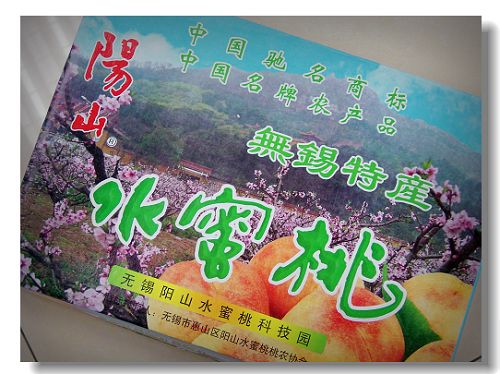
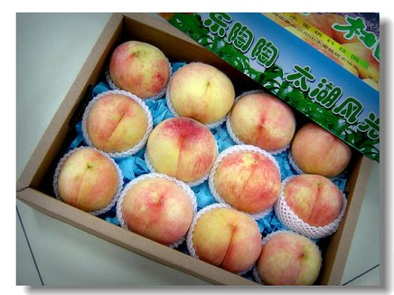

水蜜桃的伤 @ Jul 27, 2009
同事在南京买了6只所谓的无锡水蜜桃，花了18元。假的！
如何辨别真正的阳山水蜜桃？
1、一定是12只/箱；
2、12只桃子个头大小差不多；
3、桃子皮轻轻用手撕即能撕掉；
4、色泽鲜嫩，果肉多汁；
5、70~90元/箱。
俗话说：桃饱人，杏伤人，李子树下埋死人。下班回家饿得不行的情况下，会先吃只冰凉的桃子抵抵饱，然后再去做事。年年夏季的水蜜桃大派送，难怪有人嚷嚷着吃伤了~今天又有桃子送来，冰箱里还有没吃完的。难道夏季最好的礼物就是送桃子？


大多数时候我象只大虾米一样，驼着背。大概这个姿势让人可以完全没有任何负担的松弛，处于最自然状态中。卖点破绽，卖点破绽啊！
看“反恐”看得专心，连衣裙的腰带早晨是万万没时间找的，随手系了前面宽，背后窄的所谓“糖果”腰带。不晓得为什么起这么个嗲兮兮的名字？

13 Responses to “水蜜桃的伤”
2009-07-27
背景，虚化的太严重
2009-07-27
I like your dress.but I like your peaches more:)
2009-07-27
就是不要看到背景的杂乱，嘿嘿~
少爷，夏天回来吧，来吃桃子：P
2009-07-28
这莫不是传说中的峨嵋十三式之一的卖破绽式？
无锡出产的桃子还真没吃过，有机会得去试试。
2009-07-28
峨嵋十三式..哈哈~~~
这下我有两套武功了，螳螂拳和峨嵋十三式之一。。。
2009-07-28
只尝过南汇的～
2009-07-28
呵，我们公司也刚发了无锡阳山的水蜜桃，和你们的一样一样的，觉得还可以，只是若不放冰箱里的话两天就要烂掉了，我们公司里就烂了一些，可惜啊
阳山的水蜜桃倒真的是蛮好吃的
公司也是买来送客户，发给员工的，看来真成了夏季的好礼品了
2009-07-28
嗯，现在复合型人才才有竞争力。上次让你考虑加入俺们这一行的事考虑好了没有？ 哈哈。
2009-07-28
裙子很嗲，是连身的吧~
2009-07-28
看过24小时之后就不考虑了，哈哈~
俺们是供货商送，公司才没那么慷慨呢~是连身裙~
2009-07-28
你真是桃子之夏啊。。有没有办法可以延长保存期，我觉得桃子真是娇嫩之物呢。
2009-07-28
除了放冰箱就是装肚子里啦，没别的保存法~
2009-07-28
我在北京吃的平谷大桃，怀疑是无锡种，水蛮多的，但是有点面。也满足了，呵呵。
在北京期望值不能太高。
Leave A Reply
存档只读，评论已关闭。